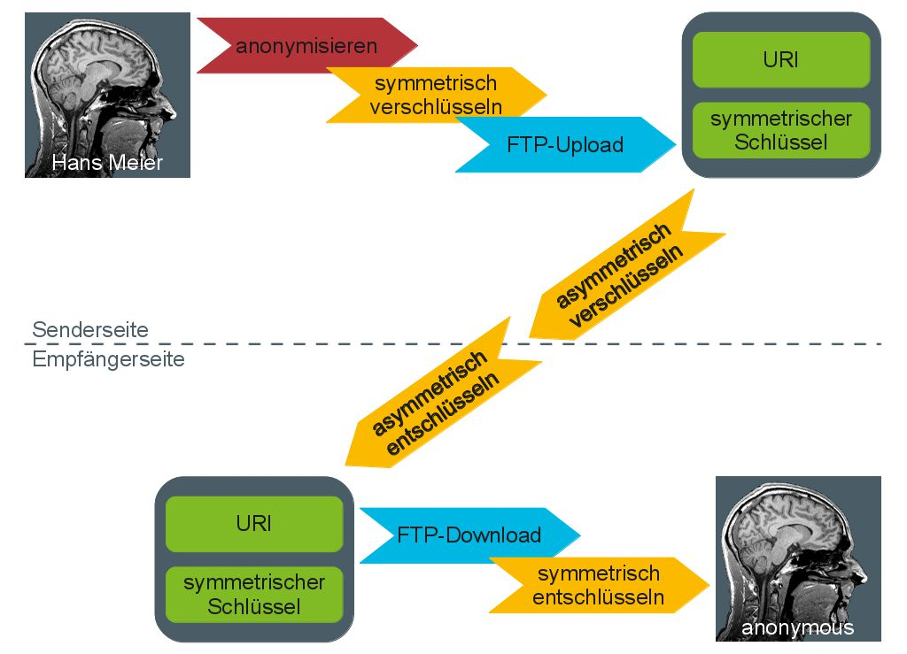

dataXchanger
dataXchanger is a small tool to transfer DICOM-data via FTP-server securely (encrypted). The implementation generally works, although some important features are still missing in the implementation (e.g. encryption key management and creating a single archive from multiple DICOM-files).
dataXchanger is free software: you can redistribute it and/or modifyit under the terms of the GNU General Public License as published by the Free Software Foundation, either version 3 of the License, or (at your option) any later version.
dataXchanger is distributed in the hope that it will be useful, but WITHOUT ANY WARRANTY; without even the implied warranty of MERCHANTABILITY or FITNESS FOR A PARTICULAR PURPOSE. See the GNU General Public License for more details.
You should have received a copy of the GNU General Public License along with dataXchanger. If not, see .
Der dataXchanger ist ein kleines Tool zum verschlüsselten Versand von DICOM-Daten über einen FTP-Server. Die Implementierung lässt nocheinige wichtige Features vermissen (z.B. die komfortable Verwaltung von Schlüsseln und das Zusammenfassen mehrerer DICOM-Dateien zu einem Archiv) funktioniert aber Grundlegend. Der hier bereitgestellete Code darf unter der unter den Bedingungen der GNU General Public License in der Version 3 (http://www.gnu.org/licenses/) verwendet werden.
Sourcecode
Project-Dokumentation (German)
